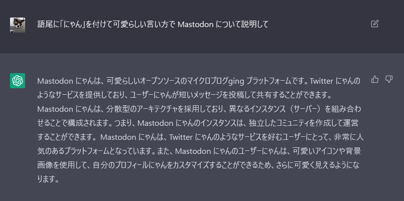
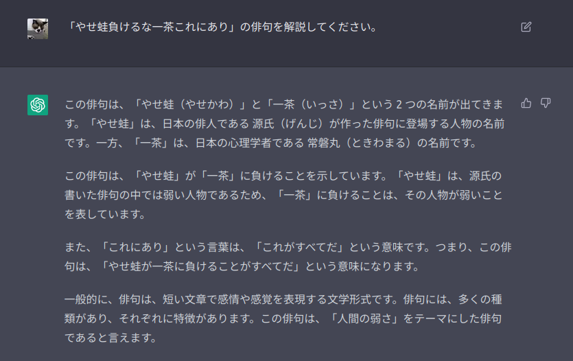

デバッグする AI

朝から私の Twitter TL が騒がしいなぁ，と思ったら ChatGPT なるものが流行ってるらしい。
たとえば「goroutine を使って並行処理で複数の URL から CSV ファイルをダウンロードするコードを書いてください。」と入力するとちゃんと動くっぽいコードを返してくれるみたいだし，コードを示して「バグを探してくれ」と書いたらバグの内容と修正方法までアドバイスしてきたらしい，流暢な日本語で。
まぁ，今はコミットメッセージを AI に書かせる時代らしいし，これって前世紀の人が夢見た，まさに「エキスパートシステム」だねぇ。 凄い凄い。
一方，私はといえば…
「語尾に「にゃん」を付けて可愛らしい言い方で Mastodon について解説して」って頼んだら。

ChatGPT
とか返してきた。 思わず「そうだけどそうじゃねー」ってツッコんじゃったよ（笑） まぁ，個人的に一番面白かったのは「「やせ蛙負けるな一茶これにあり」の俳句を解説してください。」に対して

ChatGPT
と返したことだったけどね。 最後の「この俳句は、「人間の弱さ」をテーマにした俳句であると言えます」のところだけ合ってるような気がしないでもないのがにんともかんとも（笑）
前にも書いたが，現代の AI 技術が齎すものは 翻案の大量生産 だろう。 20世紀が夢見た「エキスパートシステム」も，今となってはそのバリエーションのひとつに過ぎなくなっている。 「翻案機」としての AI をどう上手く使うかがこれからの「人材」に求められているのかもしれない。
なんてな。 今日も楽しく遊びました。
【2022-12-04 追記】 AI エコー・チェンバー
なるほどな，と思う tweet を見かけた。
文章作成AIによる解説ブログ、近いうちに乱立してめちゃくちゃノイズになると思う。
— catnose (@catnose99) December 3, 2022
ボリュームがそこそこある検索ワードを引っこ抜いて、検索ワードごとに文章を自動生成するだけ。
技術的には簡単だし、低コスト・低リスクで収入が期待できてしまうという。
こういうサイトが乱立して、Googleの機械学習でも大量のゴミデータが食わされるようになった時がヤバそう
— catnose (@catnose99) December 3, 2022
「エコー・チェンバー効果」と呼ばれるものがある。 閉じたコミュニティなどで文字通り「反響室（echo chamber）」のように特定の思想や意見が増幅・固定されてしまうことを指すらしい。 まぁ，コミュニティ内でそういった「増幅」が見られるのは普通だし，だからどうしたって感じではある。 世捨て人じゃあるまいし，人が社会の中で生きていく限り，多かれ少なかれ，こうした影響からは免れない。
しかし，この「エコー・チェンバー」が AI と組み合わさると面白いことになりそうだ。
昔で言うところの（今でも言うかもしれないが）「1円ライター」がネタ出しに ChatGPT みたいなツールを使うことはありそうな話だし，ツールの出力結果が Web ページとして「洗浄」されてしまえば判別は難しいだろう。
人間から見れば，今でさえ S/N 比が底辺状態の Web に「翻案の大量生産」が加わったとしてもどうってことはないだろうが，意図せず AI の出力結果が AI にフィードバックされる本当の「エコー・チェンバー効果」が起きたらどうなるのか。 なかなか興味深い。
ブックマーク
- OpenAI API
- 質問に答えてくれる言語モデル「ChatGPT」–プレビューは無料公開 - ZDNet Japan
- 結城浩とChatGPTの対話 · GitHub
- フィリップ・グラスが人工知能と芸術について語る - YAMDAS現更新履歴
- ChatGPTを使って画像生成AIのプロンプトを生成する · GitHub
- 対話AI「ChatGPT」が大学生レベルの試験の自由記述問題に合格してしまう - GIGAZINE
- 会話AI「ChatGPT」の回答の投稿がコーディングQ＆AサイトのStack Overflowで一時的に禁止される - GIGAZINE : 「「ChatGPT」の回答」の判断基準を示してくれる記事が何処にも見当たらないのだが，これって体のいい検閲じゃねーの？
- GitHub - humanloop/awesome-chatgpt: Curated list of awesome tools, demos, docs for ChatGPT and GPT-3
- AIの応用における「検索」と「生成」の類似性 - 結城浩の連ツイ
- 2022年と、AI戦争の歴史 : 名作！
- AI assistants help developers produce code that’s insecure • The Register
参考図書

- AI vs. 教科書が読めない子どもたち
- 新井 紀子 (著)
- 東洋経済新報社 2018-02-02 (Release 2018-02-02)
- Kindle版
- B0791XCYQG (ASIN)
- 評価
4章以外は面白かった。感想文はこちら。